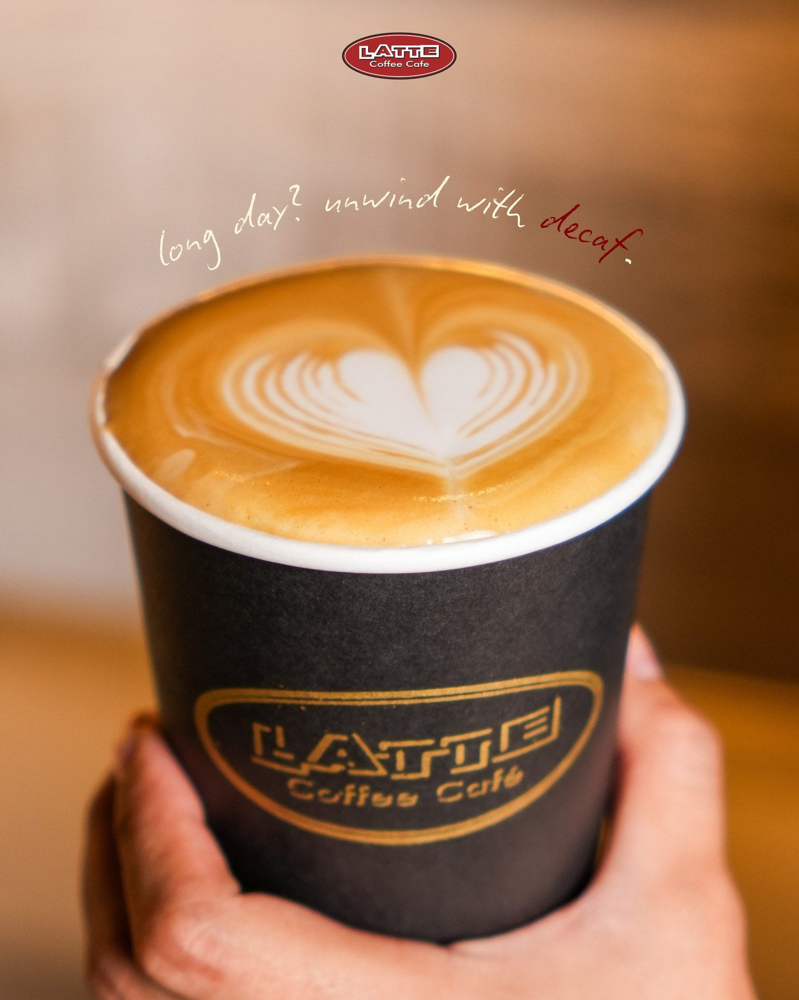
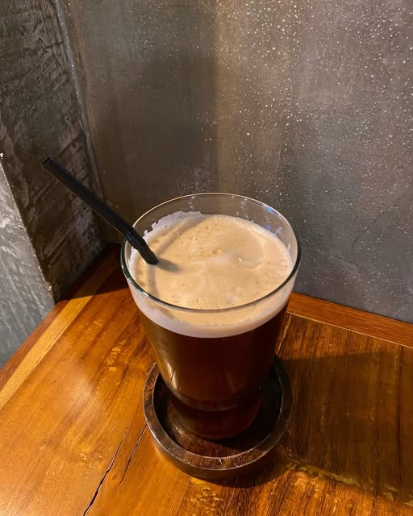

Espresso
A concentrated coffee brewed by forcing hot water through finely-ground beans. Strong and bold flavor.
📍 Madge Café
Located inside La Paz Public Market, La Paz, Iloilo City.
🔎 Search in Google Maps: "Madge Cafe Iloilo"
Located inside La Paz Public Market, La Paz, Iloilo City.
🔎 Search in Google Maps: "Madge Cafe Iloilo"
Cappuccino
A perfect balance of espresso, steamed milk, and thick milk foam on top.
📍 Coffee Break
Multiple branches in Iloilo City including SM City Iloilo and Robinsons Iloilo.
🔎 Search in Google Maps: "Coffee Break Iloilo"
Multiple branches in Iloilo City including SM City Iloilo and Robinsons Iloilo.
🔎 Search in Google Maps: "Coffee Break Iloilo"

Latte
A smooth coffee drink made with espresso and more steamed milk, with a light layer of foam.
📍 Neighbor Coffee
Located along Diversion Road, Mandurriao, Iloilo City near business establishments.
🔎 Search in Google Maps: "Neighbor Coffee Iloilo"
Located along Diversion Road, Mandurriao, Iloilo City near business establishments.
🔎 Search in Google Maps: "Neighbor Coffee Iloilo"

Americano
Espresso diluted with hot water, giving it a similar strength to drip coffee but richer taste.
📍 The Good Locals
Located in Festive Walk Parade, Mandurriao, Iloilo City.
🔎 Search in Google Maps: "The Good Locals Iloilo"
Located in Festive Walk Parade, Mandurriao, Iloilo City.
🔎 Search in Google Maps: "The Good Locals Iloilo"